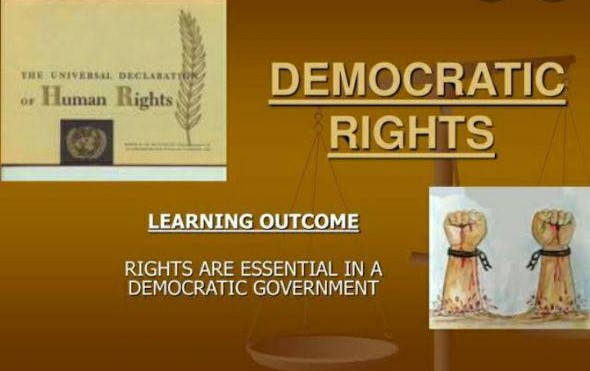

Democracy is a complicatedand time consuming system. Nevertheless,its description as the ’least worst’ form ofgovernment is just another version of the phrase ‘best but challenging and uneasy’.While building democracy, it is essential to remember that ‘functionality’, ‘effectiveness’ and ‘efficiency’ must be among its constitutive features. A sustainable rights based democracy requires, among other things, that citizens are knowledgeable about their rights, that public political participationis encouraged through elections and active involvement in local government, and that institutional accountability and transparency are ensured. 
The first panel considered strategic, policy, operational and research based issues related to how the UN and regional organizations handle unconstitutional changes in government, andthe role of civil society and national, regional and international government bodies in building an inclusive framework for democratic governance in the aftermath of regime change.The
discussion also touched upon the need for, and scope of, transitional governance arrangements, and how to reflect human rights −including minority rights − in constitutional reform efforts.
Special attention was paid to the constitution making process, with participants agreeing that the process used to develop and draft a constitution has a vital influence on both the constitution
and the ongoing life of the society concerned The participatory and transparent nature of the constitution making process helps to ensure that the final constitution reflects essential pillars of democracy, such as guaranteeing that the legitimacy of the stateis created and sustained by the will of its people and guaranteeing
an individual’s and groups’ basic rights in a society.
Ensuring such a process occurs also helps to guarantee that existing or potential grievances and conflicts can be resolved peacefully and in a timelymanner.
democracy is composed of a human rights framework,which embraces all their categories: civil,cultural, economic, political and social. In operational terms, it consists of the following:voting and political participation as definedas human rights in the ICCPR;
prioritizingfreedom of association and assembly and freedom of expression and opinion, including an independent media;
instituting a pluralistic system in which opposition parties arenot perceived as enemies but as a constant challenge to those in power to do better orto step down when the electorate decides;
a constitutional system upholding humanrights, democratic principles, the rule of law,protection of minorities and human rights being protected in the constitution against temporary majoritarian excesses These are all concepts brought togetherin UN policy documents including theUN’s Agenda for Democratization (BoutrosGhali, 1996) and the more recent SecretaryGeneral’s Guidance Note on Democracy(UN Secretary-General, 2009b).
participantsquestioned, however, what this meantpractically for the UN and, in particular,where the UN would find the resources fordemocracy to occupy a sufficiently high levelof priority in the UN system to continuum of engagement necessary.
A related concern was that the differentUN offices occupy different points on thecontinuum between democracy and humanrights. The concept of ‘One UN’ was arguablystill more a concept than a reality, and thisaffected the UN’s ability to provide long termsupport given that democratic transitions areincomplete and unsustainable if they fail to
include appropriate institutional reforms.
The perception and understanding of the concept of democracy in its various dimensions, processes and implications has significantly evolved over the years. Since the early nineties, the General Assembly of the United Nations and the UN Commission on Human Rights (herein the Commission) have adopted a host of resolutions dealing with different aspects of democracy and emphasizing its underpinning principles linked with universal values enshrined in the Universal Declaration of Human Rights and several international human rights instruments. At the 2000 UN Summit on the Millennium Development Goals and the 2005 UN World Summit, the international community reaffirmed its commitment to human rights, the rule of law and democracy as universal and indivisible core values and principles of the United Nations. The findings of the seminars, subsequently taken forward by resolutions of the UN intergovernmental bodies and developed in other official documents, reiterated the vital linkage between democracy, the rule of law, human rights, and sustainable development and highlighted common challenges to them, including